Условный оператор if. Конструкция if-else
Синтаксис:для одного оператора:
if(<выражение>) оператор;или для нескольких операторов:
if(<выражение>) {
оператор_1;
...
оператор_N;
}
Конструкция if-else
if(<выражение>) оператор_1;
else оператор_2;
или с использованием операторных скобок:
if(<выражение>) {
оператор_1;
...
оператор_N;
}
else {
оператор_1;
...
оператор_M;
}
=======================================================================================================================
Условное тернарное выражение
Условная тернарная операция имеет следующий синтаксис:<выражение 1> ? <выражение 2> : <выражение 3>;Если выражение 1 истинно, то возвращается значение выражения 2, иначе – значение выражения 3.
double max_ab = a > b ? a : b;Здесь если a > b истинно (верно), то переменной max_ab будет возвращаться результат первого выражения (между вопросом и двоеточием), то есть a. Если же a > b не верно, то max_ab получит значение переменной b (2 выражение).
Внутри тернарной операции можно использовать другую тернарную операцию.
int a = 2, b = 3, c = -4; int max = (a > b) ? ((a > c) ? a : c) : (b > c) ? b : c;Сначала проверяется условие a > b. Если это так, то далее с помощью вложенной тернарной операции возвращается максимально из двух переменных a и c. Иначе, максимум из переменных b и c. В результате получаем максимальное из трех чисел a, b, c.
Причем здесь обязательно вложенные тернарные операции следует записывать в круглых скобках, так как приоритет операций ? и : очень низкий.
=====================================================================================================================
Оператор switch
switch(<выражение>) {
case <константа 1> :
[операторы]
case <константа 2> :
[операторы]
...
[default : операторы]
}
Здесь выражение – это любая конструкция языка Си, которая возвращает целочисленное значение (включая значение типа char).
Соответственно, константы после ключевых слов case также должны быть целочисленными. Причем, вычисляемыми на этапе компиляции
(например, целочисленные переменные использовать нельзя, а вот числовые литералы можно).
Пример: Давайте предположим, что нам нужно делать выбор одного из пунктов меню:
1. Learning C language
2. Learning Python language
3. Learning Java language
4. Learning C++ language
5. Exit
Программа:
#include <stdio.h>
int main(void)
{
int item;
printf("1. Learning C language\n"
"2. Learning Python language\n"
"3. Learning Java language\n"
"4. Learning C++ language\n"
"5. Exit\n");
if(scanf("%d", &item) != 1) {
printf("Error input");
return 0;
}
switch(item) {
case 1:
printf("Learning C language\n");
case 2:
printf("Learning Python language\n");
case 3:
printf("Learning Java language\n");
case 4:
printf("Learning C++ language\n");
case 5:
printf("Exit\n");
}
return 0;
}
Запустим программу и введем с клавиатуры число 3. В результате увидим вывод следующих строк:
Learning Java language Learning C++ language ExitДля того чтобы выполнялись операторы только по одной метке, а не по все нижестоящиме используют оператор break. Как только он встречается, управление переходит к следующему оператору после switch. В результате, все операторы в нижестоящих метках пропускаются.
Оператор return чаще применяется в практике программирования для прерывания работы оператора switch.
Конечно, как только встречается «return 0;», то функция main() завершает свою работу и все операторы, стоящие после switch
выполняться уже не будут. В нашем конкретном случае, это не критично, т.к. там нет никакого значимого программного кода.
Однако, если программу нужно продолжить после оператора switch, прервав его работу, то следует использовать оператор break. В
этом главное отличие между «return 0» и break.
Ключевое слово default
Под ключевым словом default будут выполняться команды, если никакая метка не была активизирована.
switch(item) {
case 'a':
case 'A':
printf("Symbol A\n");
break;
case 'b':
case 'B':
printf("Symbol B\n");
break;
case 'c':
case 'C':
printf("Symbol C\n");
break;
default:
printf("Incorrect symbol\n");
}
То есть, операторы по метке default отрабатывают в том случае, когда не сработала ни одна из меток case. Причем определение
default может быть записано в любом месте оператора switch, но, как правило, его пишут в самом конце.
Рекомендации по использованию оператора switch
Вы могли заметить, что запись оператора switch занимает немало строк, даже в самых простых задачах. В реальной практике он нередко разрастается до больших размеров и затрудняет восприятие текста программы. Поэтому есть несколько рекомендаций, которых следует придерживаться при использовании оператора switch:- оператор switch лучше выносить в отдельную функцию и прерывать его работы с помощью оператора return;
- программу следует организовывать так, чтобы после каждой метки case прописывался вызов некоторой функции вместо набора операторов;
- никогда в программах не используйте вложенные операторы switch.
===========================================================================================================================
Битовая арифметика
В языке Си можно выполнять не только арифметические операции над числами, но и с отдельными битами. Так вот для работы с отдельными битами чисел используются следующие общепринятые операции:И, ИЛИ, НЕ, исключающее ИЛИ (XOR)
Битовая операция НЕ
Начнем с самой простой битовой операции НЕ, которая выполняет инверсию бит в соответствии со следующей таблицей истинности:
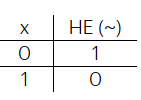
На языке Си она записывается с помощью символа ~ (тильда). Например:
#include <stdio.h>
int main(void)
{
unsigned char var = 153; //двоичная запись 10011001
unsigned char not_v = ~var; //результат: 01100110 (число 102)
printf("var = %d, not_v = %d\n", var, not_v);
return 0;
}
Здесь для простоты восприятия информации переменные обозначены как однобайтовые без знака. Первая принимает значение 153, а
вторая формируется с помощью битовой операции НЕ, то есть, с помощью инверсии всех бит числа. В результате переменная not_v
принимает значение 102.
Битовая операция И
Следующая операция битовая И в языке Си записывается символом & (амперсанд). Она является бинарной и образует следующую таблицу истинности:

Пример:
#include <stdio.h>
int main(void)
{
unsigned char flags = 5; //двоичная запись 00000101
unsigned char mask = 4; //двоичная запись 00000100
unsigned char res = flags & mask;
printf("res = %d\n", res);
return 0;
}
Данная операция применяется, если нам нужно проверить включен ли какой-либо бит числа (то есть установлен ли он в 1),
то мы можем относительно просто сделать это с помощью битовой операции И следующим образом:
#include <stdio.h>
int main(void)
{
unsigned char flags = 5; //двоичная запись 00000101
unsigned char mask = 4; //двоичная запись 00000100
if((flags & mask) == mask)
printf("bit 2 is on");
else
printf("bit 2 is off");
return 0;
}
Другим важным назначением операции И является выключение определенных бит переменной.
Делается это следующим образом:
#include <stdio.h>
int main(void)
{
unsigned char flags = 13; //двоичная запись 00001101
unsigned char mask = 5; //двоичная запись 00000101
flags = flags & ~mask;
printf("flags = %d\n", flags);
return 0;
}
Как это работает? Сначала вычисляется инверсия бит переменной mask, так как операция НЕ имеет более высокий приоритет, чем
операция И. Затем, идет операция битового И, и там где в маске стоят 1, биты переменной flags не меняются, остаются прежними,
а там где в маске стоят 0 – соответствующие биты в переменной flags обнуляются. За счет этого происходит выключение 2-го и 0-
го битов переменной flags
Битовая операция ИЛИ
Следующая битовая операция – битовое ИЛИ. Она определяется символом | и ее таблица истинности выглядит следующим образом: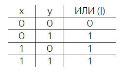
Для чего можно использовать эту операцию? Обычно ее применяют, когда нужно включить отдельные биты переменной. Рассмотрим следующую программу:
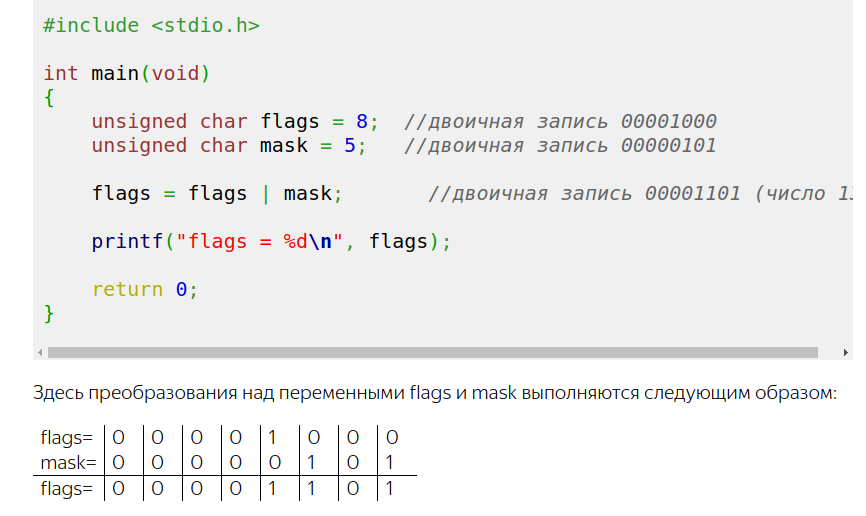
То есть, операция битового ИЛИ как бы собирает все единички из обеих переменных и получается своеобразное битовое сложение.
Битовая операция исключающее ИЛИ (XOR)
И последняя базовая операция работы с битами – исключающее ИЛИ (ее еще называют XOR). Она определяется символом ^ и имеет следующую таблицу истинности: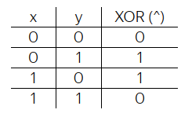
Из нее видно, что данная операция позволяет переключать биты числа, то есть, если они были равны 0, то станут 1 и, наоборот, если были 1 – станут 0. Продемонстрируем это на примере:
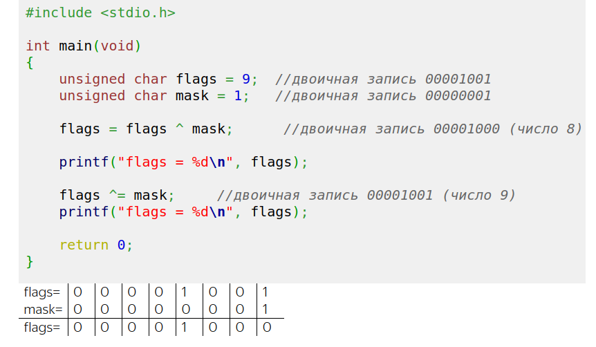
Интересной особенностью операции XOR является отсутствие потерь данных при ее работе. Что это значит? Смотрите, какую бы маску мы не взяли, дважды примененная маска дает исходное значение:
#include <stdio.h>
int main(void)
{
unsigned char flags = 9; //двоичная запись 00001001
unsigned char mask = 111;
flags = flags ^ mask; //двоичная запись 00001000 (число 8)
printf("flags = %d\n", flags);
flags ^= mask; //двоичная запись 00001001 (число 9)
printf("flags = %d\n", flags);
return 0;
}
Это, как раз, связано с эффектом переключения бит, а значит, двойное переключение даст исходный результат. Где этот эффект
можно применить? Самое простое – в шифровании данных. Например, когда у нас есть сообщение в виде набора данных и маска – как
шифровальный ключ. Тогда, к каждому блоку данных можно применить маску и, таким образом, зашифровать сообщение. В частности по
такому принципу устроена защита по паролю в архиваторе zip. Причем, сам пароль является ключом, который накладывается по XOR
на заархивированные данные.
Приоритеты базовых битовых операций
Итак, мы с вами рассмотрели основные битовые операции, которые также можно записывать и в краткой форме: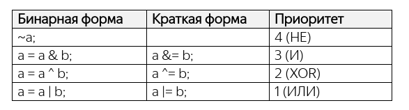
Самый высокий приоритет у унарной операции НЕ, затем, с меньшим приоритетом следует операция И, далее, XOR и самый низкий приоритет у битовой операции ИЛИ. Также обратите внимание, приоритет всех битовых операций ниже, чем у операций сравнения и существенно ниже обычных арифметических операций.
Битовые операции сдвигов >> и <<
>> смещение бит вправо; << смещение бит влево;Само название уже говорит, что они сдвигают все биты числа вправо или влево и если переменная объявлена как беззнаковая, то на освободившиеся позиции добавляются нули. Например:
#include <stdio.h>
int main(void)
{
unsigned char x = 40; // 00101000
printf("x = %d\n", x);
x = x >> 1; // 00010100 (число 20)
printf("x = %d\n", x);
x = x >> 2; // 00000101 (число 5)
printf("x = %d\n", x);
x = x >> 1; // 00000010 (число 2)
printf("x = %d\n", x);
x = x >> 1; // 00000001 (число 1)
printf("x = %d\n", x);
x = x << 1; // 00000010 (число 2)
printf("x = %d\n", x);
x = x << 2; // 00001000 (число 8)
printf("x = %d\n", x);
return 0;
}
При единичном сдвиге бит числа вправо получаем целочисленное деление числа на 2, а при единичном сдвиге влево –
целочисленное умножение числа на 2. Именно поэтому число 5 при сдвиге бит вправо дает число 2. Причем эти операции
умножения и деления работают значительно быстрее, чем традиционные арифметические операции умножения и деления. Поэтому,
разработчики различных алгоритмов для маломощных процессоров стараются составлять вычисления так, чтобы они базировались на
сдвиговых операциях, исключая прямое умножение и деление.
Сдвиги бит влево для знаковых чисел работают абсолютно так же, как и для беззнаковых. А вот сдвиг вправо несколько отличается. Здесь старший бит знака дублируется. Например:
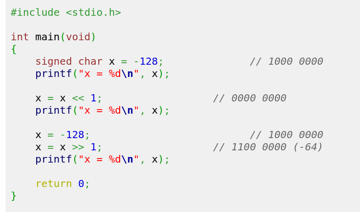
Приоритет сдвиговых битовых операций << и >> одинаковый, но выше, чем у операций сравнений и меньше чем у арифметических операций.
Итоговая таблица:
Проверка на включенность: flags & mask == maskВыключение бита: flags & ~mask
Включение бита: flags | mask
Переключение бита: flags ^ mask
Инверсия бит: ~number тоже что и -number - 1
Смещение бит вправо: number >> 1 тоже что и number // (2 ** 1)
Смещение бит влево: number << 1 тоже что и number * (2 ** 1)
======================================================================================================================
Генерация псевдослучайных чисел. Функции математической библиотеки
Генерации случайных значений довольно распространенная операция, которую совместно используют при арифметических действиях. В языке Си для этого имеется специальная функция, которая определена следующим образом:int rand(void);
Она возвращает псевдослучайные целые значения в диапазоне от [0 до константы RAND_MAX]. Значение RAND_MAX не меньше числа 32767. Функция rand() и константа RAND_MAX определены в заголовочном файле stdlib.h. Например, в самом простом варианте в программе можно сгенерировать несколько случайных значений следующим образом:
#include <stdio.h>
#include <stdlib.h>
int main(void)
{
int r_1 = rand();
int r_2 = rand();
printf("%d, %d, %d, %d, %d\n", r_1, r_2, rand(), rand(), rand());
return 0;
}
Сгенерированные числа называются псевдослучайными, а не случайными, так как они все же вычисляются по некоторому алгоритму.
Истинной случайности мы здесь получить не можем. В частности, это означает, что такие псевдослучайные значения не следует
применять в алгоритмах шифрования.
Второе. При каждом запуске программы функция rand() выдает абсолютно ту же самую последовательность значений псевдослучайных чисел. Это связано с тем, что алгоритм их генерации базируется на начальном состоянии регистров при запуске программы. А они каждый раз содержат одни и те же данные.
Третье. Значения псевдослучайных чисел распределены по равномерному закону в диапазоне [0; RAND_MAX]. То есть, с равной вероятностью может появиться любое значение из этого диапазона.
Что если нам нужно при запуске получать все время разные случайные значения? Как это сделать? Для этого пользуются функцией:
void srand(unsigned int seed);
которая задает начальное значение «зерна» (seed) для датчика псевдослучайных чисел. Если это зерно указать, например, равным 10 (в начале функции main()):
srand(10);
то увидим уже другую последовательность чисел
Правда, она все равно меняться не будет. Чтобы изменения происходили каждый раз от запуска к запуску, необходимо при каждом запуске менять значение зерна. В практике программирования для этого часто используют еще одну функцию:
time_t time(time_t * const _Time);
которая объявлена в заголовочном файле time.h и возвращает текущее время в секундах. Не вдаваясь в подробности, мы можем ее вызвать, например, следующим образом:
int t = time(NULL);
Тогда значение переменной t каждый раз будет меняться от запуска к запуску. А это именно то, что нам и нужно. Объединим обе
функции, получим:
srand(time(NULL));
Все, теперь каждый раз мы будем получать разные вариации псевдослучайных значений. Причем, функцию srand() достаточно вызвать
только один раз при запуске программы. Псевдослучайные числа формируются далее через rand().
У меня чтобы работала эта формула нужно в скрипт включать заголок #include <time.h>
Генерация псевдослучайных чисел заданного диапазона
Следующий вопрос, как сформировать псевдослучайные числа произвольного диапазона? Как правило, меньшего чем [0; RAND_MAX]. Если при этом, нам нужно сохранить целочисленные значения, то меньший диапазон легко получить с помощью операции деления по модулю, например, так:
int range = 10;
int r_1 = rand() % range; // [0; range)
Обратите внимание, граничное значение 10 не входит в диапазон, оно исключается (поэтом в конце записана круглая скобка).
Если диапазон должен начинаться не с нуля, то соответственно, нужно сделать обычное математическое смещение значений (вычитание), например:
int r_2 = rand() % range - 5; // [-5; range-5)
И так для любого разумного диапазона целых чисел, меньшего начального [0; RAND_MAX]. Если потребуется больший, то вначале
можно сложить два случайных значения:
int r_3 = rand() + rand(); // [0; 2*RAND_MAX]
А, затем, применить к нему все те же математические преобразования.
Генерация из диапазона [a; b]:
x = rand() % (b -a + 1) +a;
Несколько иначе обстоит дело с получением вещественных значений. Часто поступают следующим образом. Вначале весь диапазон [0; RAND_MAX] приводят к диапазону вещественных значений [0; 1], а затем, масштабируют и смещают его, если это необходимо. Например:
double range_float = (double)rand() / (double)RAND_MAX; // [0; 1]
Обратите внимание на операцию приведения типов. Так как функция rand() возвращает целочисленные значения и константа RAND_MAX тоже целочисленная, то при делении мы бы получали тоже целые числа с отбрасыванием дробной части. Поэтому перед делением мы приводим оба значения к вещественному типу double, чтобы получить также вещественное число в диапазоне [0; 1].
После этого, используя вещественное случайное значение range_float диапазона [0; 1], мы легко можем формировать любые другие диапазоны из псевдослучайных вещественных чисел.
Основные математические функции
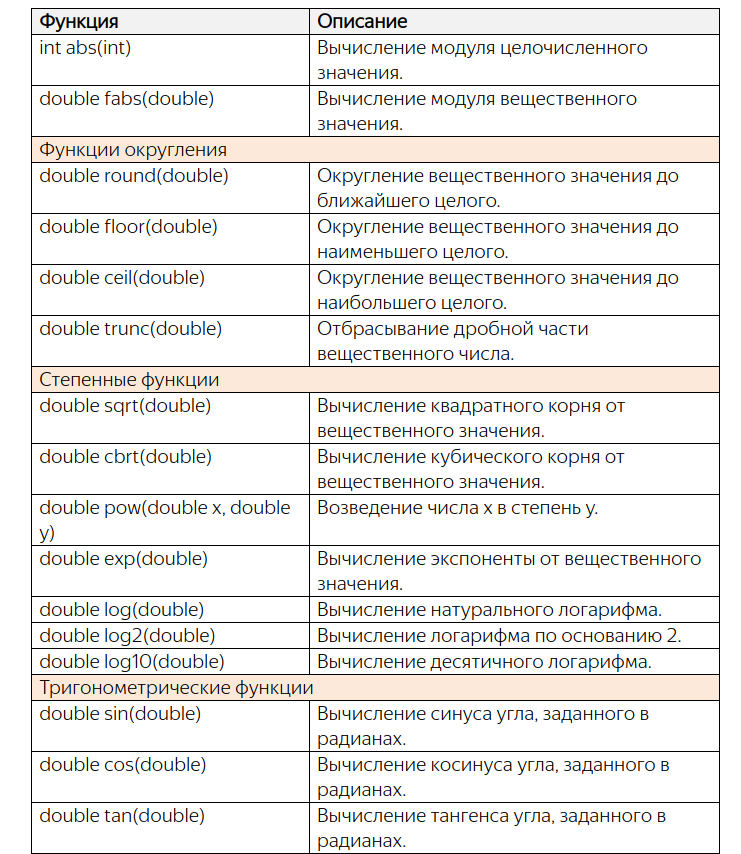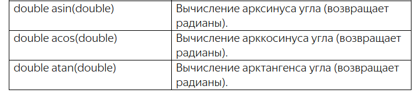
Чтобы пользоваться этими функциями нужно подключить заголовочный файл math.h, где все эти функции определены.
Пример для синуса:
double res_1 = sin(x1); double res_2 = sin(2 * x1); double res_3 = sin(10.0 / 15.0);Главное, чтобы вычисляемое выражение соответствовало типу передаваемых значений. Во всем остальном ограничений никаких нет.
Если в терминале получаем ошибку: неопределённая ссылка на «sqrt» collect2: error: ld returned 1 exit status
Нужно к компилируемому файлу добавить суффикс -lm
gcc example.c -lm
Для функции abs() и rand() нужно подсоединить заголовочный файл stdlib.h
========================================================================================================================
Директивы макропроцессора #define и #undef
Текстовый препроцессор выполняет некоторое преобразование текста программы до ее компиляции. Нас, главным образом, будет интересовать работа макропроцессора, который выполняет команды, прописанные непосредственно в тексте программы. О чем здесь идет речь? Смотрите. Практически в любой программе на языке Си имеются, так называемые, макродирективы (или, попросту, директивы). Все они начинаются со специального символа #, за которым следует имя директивы. Например, в наших программах постоянно фигурировала макродиректива с именем include:#include <stdio.h>В двух словах, как только текстовый препроцессор встречает в тексте программы эту команду, он на ее место вставляет содержимое файла (в нашем примере stdio.h). Сама же макродиректива удаляется из текста программы и на компилятор поступает программа, состоящая только из конструкций языка Си.
Знакомство с командами макропроцессора мы начнем с директивы define, которая позволяет определять в программе свои собственные макроопределения (или, как часто говорят, макросы).
В простейшем случае синтаксис для описания макроопределения имеет следующий вид:
#define <макроимя> [тело макроса]
И, как правило, записывается в пределах одной строки. Строго говоря, обычный перенос строки будет означать завершение описания макроса. Хотя, при необходимости, это правило можно обойти. Для этого используют бэкслэш (\).
Конкретные примеры макроопределений:
#define MENU_TRANSL 1 #define MENU_ADD 2 #define MENU_EXIT 3 #define MENU_FMT "You have selected menu item %d\n" #define FIRST_LETTER 'a'Как видите, макроимена принято записывать заглавными буквами, хотя формально можно использовать и малые. Но лучше придерживаться этой традиции, чтобы выделять макросы на фоне остальных конструкций языка Си.
Пример применения:
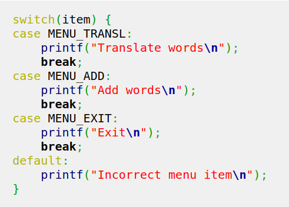
После того, как мы прописали макросы в операторе switch, они стали не чем иным, как макровызовами. Это значит, что на этапе обработки текста препроцессором (до непосредственной компиляции программы в машинный код) все эти макровызовы будут преобразованы макропроцессором в заданные нами определения. Например, макрос MENU_TRANSL определен как целое число 1. Значит, вместо него макропроцессор подставит это значение. И также поступит с именами MENU_ADD и MENU_EXIT. В итоге, дальше на компиляцию поступит программа без этих текстовых определений, а с конкретными числами.
Макровызовы следует прописывать вне кавычек, иначе будет не макровызов, а строка:
printf("FORMAT\n"); // здесь не макровызов FORMAT, а строка "FORMAT".
Думаю, излишне говорить, что макровызовы следует делать после макроопределений. Именно поэтому, директивы #define, как правило, прописываются вначале программы. Это гарантирует, что во всем тексте можно без ограничений прописывать соответствующие макросы и позволяет легко находить место их определения.
Директива #undef
Также, разумеется, если какой-либо макрос ранее был определен, то переопределить его с новым поведением уже не получится. Если все же это требуется сделать, то сначала нужно отменить прежний макрос и прописать новый. Для отмены макроопределений используется директива #undef, например, так:#define TEN 2 * FIVE #undef TEN #define TEN 10
Макродирективы - функции
Макродирективы можно использовать с параметрами (аргументами в скобках).Пример:
#include <stdio.h>
#define SQ_PR(A, B) A * B //здесь SQ_PR = результат умножения A B
int main(void)
{
int res = SQ_PR(2, 3);
printf("res = %d\n", res);
return 0;
}
Получаем, своего рода, макрос-функцию, которая формирует результаты в зависимости от переданных значений в параметры A и B.Вывод на экран будет: res = 6
Операции # и ##
Рассмотрим две операции # и ##, которые иногда используют при определении макросов.Первая операция # возвращает текстовое представление лексемы, например, параметра:
#include <stdio.h>
#define SQ_PR(A, B) ((A) * (B))
#define TEXT(A, B) "Square of rectangle (" #A ") x (" #B ")\n"
int main(void)
{
int res = SQ_PR(2, 3);
printf(TEXT(x-2, y-3));
return 0;
}
После выполнения программы увидим строку:
Square of rectangle (x-2) x (y-3)
Обратите внимание, программа была успешно скомпилирована и выполнена, несмотря на то, что в ней нет объявлений для x и y, которые были указаны в макровызове TEXT(x-2, y-3). И в этом нет никакой магии. Как я уже говорил, макропроцессор выполняет обработку текста программы до синтаксического анализатора и до перевода программы непосредственно в машинный код. Поэтому фрагмент TEXT(x-2, y-3) заменяется на строку «Square of rectangle (x-2) x (y-3)\n», которая компилируется без каких-либо проблем.
А теперь, как она работает. В макро-функции TEXT(A, B) у нас два параметра, а затем, идет тело макроса в виде пяти фрагментов строки. Первый фрагмент – это буквально та строка, что прописана. Второй фрагмент #A формируется из представления параметра A, а он в нашем примере представляет собой выражение x-2. И это выражение преобразуется в обычную строку. И далее все остальные фрагменты. Все они соединяются в одну строку и формируют конечный результат макровызова TEXT(x-2, y-3).
Вторая операция ## работает аналогичным образом, только служит не для склейки строковых представлений, а исходных лексем – самих выражений. Например:
#include <stdio.h>
#define SQ_PR(A, B) ((A) * (B))
#define TEXT(A, B) "Square of rectangle (" #A ") x (" #B ")\n"
#define X_N(N) x ## N //здесь 2 лексемы: x и 4
int main(void)
{
int x1 = 1, x2 = -2, x4 = 10;
printf("%d\n", X_N(4));
return 0;
}
Смотрите, в программе мы объявили три переменных с именами x1, x2 и x4. А, затем, выводим значение переменной x4, используя
макровызов X_N(4). Почему это сработало? В теле макро-функции X_N прописаны две лексемы: x и N, причем, вместо N подставляется
переданное выражение 4. В итоге, вызов X_N(4) объединяет в единую лексему x4 выражение x и 4 и это эквивалент того, что мы в
программе вместо X_N(4) прописали выражение x4, которое соответствует ранее объявленной целочисленной переменной. Вот принцип
работы операции ## в макроопределениях.
Пример:
#include <stdio.h>
#define CELL_N(N) cell_ ## N
int main(void)
{
short cell_1 = 1, cell_2 = 2, cell_3 = 3;
int n = 2;
int res_1 = CELL_N(1) + 10; //cell_1 + 10
int res_2 = CELL_N(n) * 2; //cell_n * 2 поскольку cell_n не определена, то вызовет ошибку
int res_3 = CELL_N(1+2) * 3; //cell_1+2 *3 результат =7
return 0;
}
У меня при попытке выполнить этот код, выводит сообщение:
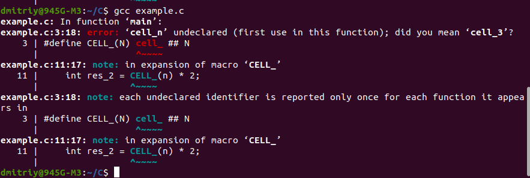
Как я уже говорил, сложные выражения в макроопределениях лучше избегать, т.к. они вполне могут служить источником непредвиденных ошибок. Поэтому чаще всего директиву #define применяют для задания констант в виде чисел или строк и много реже в виде каких-либо выражений.
==========================================================================================================================
Директивы #include и условной компиляции
Как только макропроцессор встречает #include, то вставляет содержимое указанного файла вместо этого include.в нашем проекте создадим подкаталог tmp и в нем разместим файл с именем printf.h и содержимым:
int printf(const char *format, ...);
Затем, подключим этот файл в программе следующим образом:
#include "tmp/printf.h"Имя файла после директивы #include можно заключать или в угловых скобках, или в кавычках. Например, если ее записать в виде:
#include "stdio.h"
то ничего не изменится и программа также успешно откомпилируется.Правило использования угловых скобок и кавычек в сообществе
разработчиков стало таким:
Если нужно подключить стандартные файлы, поставляемые с компилятором языка Си, то следует писать угловые скобки. Если же
подключаются свои собственные заголовочные файлы, то их имена следует заключать в двойные кавычки.
Директивы условной компиляции
#if, #endif, #elif, #else, #ifdef, #ifndef, #elifdef, #elifndefВ основном они используются, чтобы оставить или убрать определенный фрагмент текста программы в зависимости от какого-либо условия. Например, пишется программа, которую предполагается компилировать с использованием компилятора Си, а также с использованием компилятора С++. Но в этих языках программирования имеются некоторые отличия в используемых конструкциях и часть программного кода должна различаться в зависимости от языка. Так вот, чтобы написать универсальный текст программы и иметь возможность компилировать его как Си, так и С++, можно воспользоваться условными директивами следующим образом:
#define LANG_C
#if defined(LANG_C)
# include <stdio.h>
#else
# include <iostream>
#endif
int main(void)
{
int x=5;
#ifdef LANG_C
printf("%d\n", x);
#else
std::cout << x << std::endl;
#endif
return 0;
}
Смотрите, вначале определено макроимя LANG_C с помощью директивы #define. Затем, прописана директива #if, в которой
проверяется условие: определено ли макроимя LANG_C в текущем модуле. Если это так (как в нашем примере), то макропроцессор
оставляет в программе все, что записано после этой директивы либо до следующей условной директивы, либо до директивы #endif. В
приведенном примере, остается строчка «# include <stdio.h>» и удаляется строка «# include <iostream>».
Соответственно, директива #include также, затем, обрабатывается макропроцессором.
директива #ifdef – это сокращенный вариант записи конструкции #if defined.
По сути, директивы условной компиляции #if, #else, #endif работают подобно условным операторам if-else, о которых мы с вами уже говорили. Но, конечно же, есть и отличия. Первый важный момент: в условиях директив можно использовать исключительно целочисленные литералы и макроимена. С этими элементами можно выполнять все булевы операции сравнения:
==, !=, <, >, <=, >=
логические связки:
&&, ||, !
все бинарные арифметические и битовые операции:
+, -, *, /, %, &, |, ^
и применять оператор defined, которые возвращает 1, если указанное макроимя существует и 0 – в противном случае. Есть еще несколько экзотических конструкций, вроде условной тернарной операции, которые допустимо прописывать в условиях директив, но в основном используются те операции, что перечислены выше. Обратите внимание, никаких переменных, функций и прочих конструкций, значение которых определяется в процессе работы программы, здесь применять нельзя.
Второй важный момент. Директивы условной компиляции не образуют своих собственных внутренних блоков. Поэтому для указания того, что попадает внутрь таких директив, в конце обязательно следует прописать директиву #endif – метку, означающую конец текущей директивы условной компиляции.
Третий важный момент. Директивы препроцессора анализируют программу как текст (на уровне лексем). Это означает, что они не учитывают области видимости: локальные, глобальные и т.п. Поэтому все директивы принято записывать с самого начала строки (с левого края). В частности, именно поэтому символ # у директив include записан на одном уровне с другими директивами, т.к. никакого реального вложения здесь нет, и это мы подчеркиваем оформлением. То же самое при записи директив внутри функции main(). Для всех этих директив функции не имеют никакого значения – это просто текст. Поэтому все они прописаны с самого начала строки.
Использование директив условной компиляции в заголовочных файлах
Если мы посмотрим на содержимое какого-либо стандартного заголовочного файла, например, того же stdio.h, то вначале увидим такие строчки:#ifndef _INC_STDIO #define _INC_STDIOА ниже обязательно будет записана директива:
#endif
С какой целью эти директивы здесь используются? На самом деле это защита от повторного включения содержимого заголовочного
файла в текущий модуль.
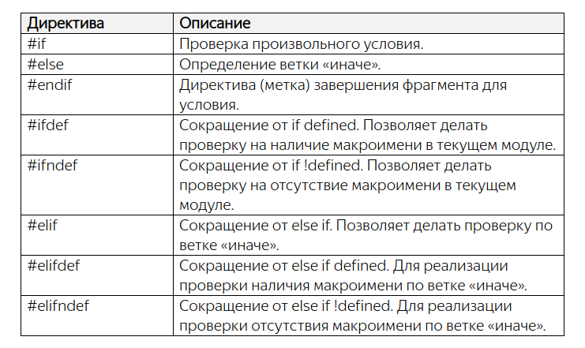
Примеры:
const int max_size = 5; #define SIZE 1 #define IS_CPP #if !defined(SIZE) ... #endif #if SIZE > 10 - 8 ... #endif #ifdef(IS_CPP) ... #endif //error: macro names must be identifiers, не понял почему #if(SIZE == 1) ... #endif #if SIZE > 0 ... #endif #if IS_CPP ... #endif //error: #if with no expression, не выражение #if max_size > 1 ... #endif //ошибка, не макродиректива #if SIZE >= 0 && SIZE <= 10 ... #endif #ifdef IS_CPP ... #endif #ifndef IS_CPP ... #endif #if defined(SIZE) ... #endif
==========================================================================================================================
Циклы
Оператор цикла while
Синтаксис:
while(<условие>)
оператор;
или
while(<условие>) {
оператор 1;
...
оператор N;
}
В программировании оператор или блок операторов, выполняющихся в цикле, называют телом цикла. А один проход выполнения
оператора цикла – итерацией. Сам цикл while относится к циклам с предусловием, т.к. сначала проверяется условие цикла и
только после этого (при истинности условия) выполняется текущая итерация.
Примеры:
while(n > 0) - В круглых скобках прописано условие продолжения цикла: пока n больше нуля.
while(n-- > 0) - Сначала выполняется сравнение переменной n с нулем и после этого операция декремента. То есть, когда выполнение программы переходит к оператору тела цикла «s += n*n;» переменная n уже на единицу меньше. Возможно, некоторых из вас это удивит, так как операция декремента записана в постфиксной форме (после имени переменной), а значит, она должна выполняться в последнюю очередь. Но логика работы здесь несколько иная. Любое выражение, которое прописывается в условии, сначала полностью вычисляется и только затем осуществляется переход к телу цикла.
while(--n > 0) - Префиксная форма записи операции декремента сначала уменьшит значение n на единицу и только после этого будет осуществляться сравнение с нулем.
while(++i <= n && i <= 10) -Вначале записана операция инкремента в префиксной форме. Это означает, что значение переменной i увеличится на единицу и только потом выполнится операция сравнения. Мало того, здесь мы можем точно гарантировать, что операция инкремента (в любой форме записи: префиксной или постфиксной) отработает до перехода к следующей проверке i <= 10. Так заложено в стандарте языка Си. И это правило справедливо для всех логических связок:
&& и ||где бы они ни использовались: в операторах циклов или условных операторах.
Благодаря этому мы можем четко понимать, как отработает данный цикл. Вначале обязательно увеличится значение переменной i на единицу, затем, проверится условие i <= n и только после этого (при необходимости) будет проверяться второе подусловие i <= 10.
Вообще, в качестве условия цикла while можно записывать любое выражение. Например:
while(scanf("%d", &x) == 1 && x != 0) - Здесь цикл while будет работать до тех пор, пока пользователь либо вводит
корректные данные (целые числа), либо введет число 0.
Важный момент использования операторных фигурных скобок. Обычная переменная, объявленная внутри них, например:
while(scanf("%d", &x) == 1 && x != 0) {
int res = x % 2;
if(res == 0)
s += x;
}
существует только в пределах этих операторных скобок и перестает существовать, когда выполнение программы перейдет к
следующему оператору за пределами этих фигурных скобок. То есть, если мы захотим вывести значение переменной res после цикла
while:printf("res = %d\n", res);
то при компиляции возникнет ошибка, что переменная res не определена.
На самом деле, это очень полезное поведение, заложенное в язык Си. На практике часто внутри фигурных скобок объявляют временные переменные, необходимые для отработки внутренней логики. Потом они просто автоматически исчезают и не мешают работе остальной программы.
-------------------------------------------------------------------------------------------------------------------------
Оператор цикла for
В отличии от while цикл for позволяет записывать инициализацию переменных, проверку условия, изменение переменной для новой итерации в одной строке.Синтаксис:
for([инициализация]; [условие]; [изменение значений])
оператор;
или
for([инициализация]; [условие]; [изменение значений]) {
операторы;
}
В этом операторе можно прописать инициализацию переменных перед запуском цикла, условие цикла и порядок изменения значений
после выполнения каждой итерации цикла.Каждый блок внутри квадратных скобок необязателен. Но точку с запятой все равно ставим:
for(; i <= n;) - здесь только блок проверки условия
for(int i = 1; i <= n; ++i) - В блоке инициализации цикла for можно объявлять и инициализировать новые переменные
for(i = 1, p = 1; i <= n; ++i)
for(i = 1, p = 1; i <= n; p = p * i, ++i)
{ }
Здесь вся логика вычислений прописана внутри оператора цикла for. Соответственно, в теле цикла ничего прописывать не нужно, но
формально там все же должен быть указан хотя бы один оператор. Точка с запятой, как раз и воспринимается компилятором как
оператор, который ничего не делает. Также в блоке изменения значений прописаны две операции, разделенные запятой. При этом
сначала выполнится первая операция p = p * i и только потом вторая ++i. Это поведение для операции запятая строго определено в
стандарте языка Си. Вычисление выражений, разделенных запятой, происходит слева-направо и никак иначе.
-------------------------------------------------------------------------------------------------------------------------
Цикл do-while
Синтаксис:
do {
[оператор (один или несколько)]
} while(<условие>);
Фигурные скобки при записи этого оператора строго обязательны, даже если в них будет находиться всего один оператор. Также
после ключевого слова whileдолжна стоять точка с запятой.
Само название этого оператора говорит, что цикл do-whileотличается от цикла while, фактически, только тем, что сначала
выполняется итерация, а затем, проверяется условие для продолжения цикла. При этом цикл do-while работает пока истинно условие. Соответственно, как только условие становится ложным, цикл завершается и управление передается следующему оператору в
программе.
Пример:
#include <stdio.h>
int main(void)
{
int pass_code = 13;
int enter_code;
do {
printf("Please enter the secret code: ");
scanf("%d", &enter_code);
} while(enter_code != pass_code);
printf("Access is allowed\n");
return 0;
}
Операторы break, continue и goto
break – досрочное прерывание работы оператора цикла;continue – пропуск итерации тела цикла;
goto – безусловный переход по метке.
Последний оператор, который мы рассмотрим на этом занятии, это goto. Он позволяет передать управление любому другому оператору по указанной метке в пределах текущей функции (в пределах той функции, в которой вызывается данный оператор).
#include <stdio.h>
int main(void)
{
int s = 0;
for(int i = 1; i <= 10; ++i)
for(int j = 7; j >= 5; --j) {
if(i-j > 0)
goto exit_sum;
s += i - j;
}
exit_sum: printf("s = %d\n", s);
return 0;
}